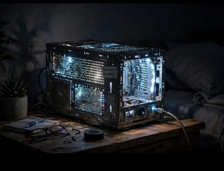

Kipas Angin Fungsional dari Fan CPU Bekas

Ulasan Produk: Kipas angin fungsional dari fan CPU bekas merupakan kreasi daur ulang yang menggabungkan kembali kipas prosesor, rangka dari plat casing, dan kabel USB menjadi sebuah kipas angin mini yang dapat digunakan kembali. Dilengkapi dengan tombol on/off dan kabel colokan USB, produk ini tidak hanya berfungsi mendinginkan meja kerja, tetapi juga memiliki nilai estetika bergaya industrial. Selain menghemat biaya, proyek ini menjadi solusi efektif dalam mengurangi limbah elektronik komputer.
- Alat dan Bahan
- Alat
- Obeng (1 buah)
- Tang kecil (1 buah)
- Solder (1 buah)
- Bahan
- Fan CPU bekas (1 buah)
- Kabel USB bekas (1 buah)
- Dudukan dari casing CPU (1 buah)
- Tombol on/off (1 buah)
- Lem tembak (5 buah)
- Isolasi / solasi (secukupnya)
- Alat
- Langkah kerja
- Siapkan fan CPU, bersihkan dari debu.
- Pasang fan pada dudukan casing yang sudah dibentuk.
- Sambungkan kabel fan ke kabel USB dan tombol on/off menggunakan solder.
- Pastikan sambungan tertutup isolasi dan tidak ada kabel terbuka.
- Uji dengan colok ke powerbank / laptop.
- Estimasi Biaya
Biaya Alat
No Nama Alat Harga 1 Obeng (1 buah) Rp10.000 Total biaya alat Rp10.000 Biaya Bahan
No Nama Bahan Harga 1 Fan CPU bekas Rp0 2 Kabel USB bekas Rp0 3 Dudukan casing CPU Rp0 4 Tombol On/Off Rp5.000 5 Lem tembak (5 buah) Rp10.000 6 Isolasi Rp3.000 Total biaya bahan Rp18.000 Kesimpulan Biaya
Total Biaya Produksi Rp28.000 Harga Jual Rp60.000 Keuntungan Rp32.000